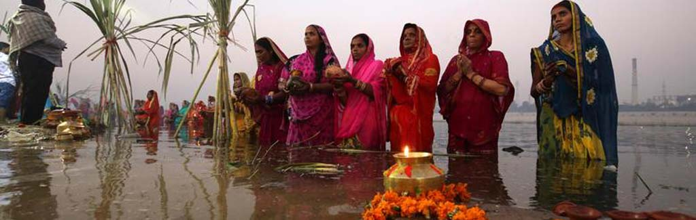

Culture & Art of Mithila
Mithila has one of the richest and most continuous living cultural traditions in South Asia. Its art, music, festivals, and social customs have survived for centuries - not in museums, but as everyday living practices in homes, courtyards, and communities across the region.

Madhubani (Mithila) Painting
Madhubani painting is the most well-known cultural export of the Mithila region. Originating as wall and floor paintings in homes- especially during weddings and festivals-the tradition has been practised by women of the region for thousands of years and passed down from mother to daughter.
The paintings are characterised by bold outlines, intricate patterns, and a vibrant use of natural colours. Common subjects include Hindu deities (Durga, Krishna, Ram-Sita), nature scenes (fish, birds, lotus flowers, the sun and moon), and scenes from the Ramayana and Mahabharata.
| Styles of Madhubani Painting | ||
|---|---|---|
| Style | Traditionally Practised By | Characteristics |
| Bharni | Brahmin and Kayastha women | Filled with bright solid colours; religious themes, deities |
| Katchni | Kayastha women | Fine line work; hatching and cross-hatching patterns; subtle |
| Tantrik | All communities | Geometric patterns; symbols of power, fertility, and protection |
| Godna | Lower-caste women (Dusadh community) | Based on traditional tattoo (Godna) patterns; bold, abstract |
| Kohbar | All - painted in bridal chamber | Bamboo, lotus, fish, birds; fertility and prosperity symbols |
Festivals of Mithila
Mithila is a region of festivals. The Maithil people celebrate both Hindu and community-specific festivals with great energy throughout the year.
| Festival | When | Significance |
|---|---|---|
| Chhath Puja | October - November | The most important festival of Mithila. Devotees offer prayers to the Sun god (Surya) at rivers and ponds. Women fast for two days and stand in water at sunrise and sunset. Now celebrated globally by Maithil communities. |
| Vivah Panchami | November - December | Celebrates the marriage of Ram and Sita. Massive celebrations at Janaki Mandir in Janakpur; pilgrims come from all over South Asia. |
| Sama-Chakeva | November (Chhath season) | A uniquely Maithil festival celebrating the bond between brothers and sisters. Clay figurines of birds are made by women and girls; songs are sung at dusk. |
| Ram Navami | March - April | Birth of Lord Ram; celebrated with processions and devotional music in Janakpur and across Mithila. |
| Jitiya | September - October | Mothers fast for the long life and wellbeing of their sons; one of the most observed fasts in Mithila, lasting over 24 hours without water. |
| Madhushravani | July - August | A month-long festival observed by newly married women; stories of Shiva and Parvati are sung; sacred snakes (Nag-Nagin) are worshipped. |

Traditional Maithil Food
Maithil cuisine is simple, flavourful, and distinctive. It relies heavily on mustard oil, pungent spices, and fresh vegetables grown in the fertile Terai plains.
Thekuwa
A sweet biscuit made from wheat flour, jaggery, and ghee, shaped into decorative patterns. It is the most important offering made during Chhath Puja and is also eaten as a snack throughout the year.
Dahi-Chura
Flattened rice (chura/poha) soaked in curd (dahi) and served with jaggery. A beloved breakfast and festival food across Mithila.
Tilkut and Til Ladoo
Sweets made from sesame seeds (til) and jaggery or sugar. Made especially during Makar Sankranti (January) and widely gifted between families.
Fish Curry (Machh-Bhat)
Mithila's abundant ponds and rivers make fish a staple. Fish curry with rice (machh-bhat) is served at weddings and special occasions and is considered auspicious.
Music & Literature
The greatest literary figure of Mithila is Vidyapati (c. 1352 – 1448), whose devotional poems in Maithili are still sung during festivals like Chhath Puja and Devi Puja. He is often compared to Chaucer for his role in elevating the vernacular language over Sanskrit.
Traditional folk music forms of Mithila include Nachari (devotional songs for Shiva), Sama-Chakeva geet (songs of the Sama-Chakeva festival), and Sohar (songs sung at the birth of a child). The traditional musical instrument of the region is the Jhijhia drum.
Social Customs & Etiquette
Greeting: Maithil people traditionally greet elders by touching their feet (Pranaam). Saying "Pranam" with folded hands is the standard respectful greeting.
Dress: Women traditionally wear sarees; many married women apply a red tika and wear red bangles. Men wear dhoti-kurta for formal and religious occasions.
Hospitality: Guests are treated with great importance - "Atithi devo bhava" (the guest is like God) is taken very seriously. Refusing food from a host is considered disrespectful.
Kohbar art: When visiting a recently married family, you may see Kohbar paintings on the walls of the bridal room - these are auspicious and should be treated with respect.
View paintings and cultural images in the Gallery, or plan your visit on the Visit Mithila page.